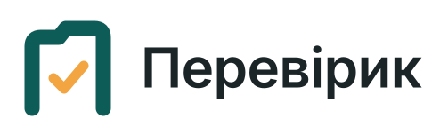
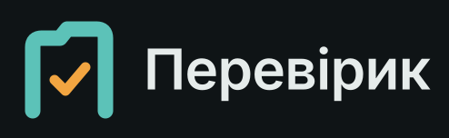

Перевірик підказує, що саме вимагає від тебе закон, і за 2 хвилини складає ризик-профіль клієнта з поясненням. Відповідаєш на прості питання — документ готовий до друку.
Безкоштовні інструменти працюють у твоєму браузері — дані клієнтів нікуди не відправляються.
Якщо ведеш облік клієнтам не як штатний працівник, ти спеціально визначений суб’єкт фінмоніторингу (ст. 6 Закону № 361-IX). Порогу за сумою немає.
Посередництво чи консультації під час купівлі-продажу нерухомості — без порогу. Для оренди — коли плата від 400 000 грн на місяць.
У квітні 2026 Мінфін розіслав листи бухгалтерам і податковим консультантам, які не стали на облік у Держфінмоніторингу.
За неналежну перевірку клієнта — до 204 000 грн, за неподання інформації — до 340 000 грн (ст. 32 Закону № 361-IX).
Хороша новина: якщо ти працюєш одноосібно (ФОП без юрособи), закон не вимагає від тебе внутрішніх правил і відповідального працівника. Потрібні облік, перевірка клієнтів, ризик-профілі, зберігання документів і річний звіт. Ми не продаємо зайвого.
П’ять питань — і в тебе персональний список: що зробити зараз, що щороку, що тобі не потрібно.
Дванадцять «так / ні» — і рівень ризику з поясненням, чому, та які заходи вжити.
Друкуєш або зберігаєш у PDF і кладеш у справу клієнта. Зберігати треба 5 років.
Безкоштовні інструменти працюють уже зараз. Платні тарифи — у розробці: залиш заявку, і перші 100 отримають −50% на 3 місяці.
Ні. Перевірик — інструмент-підказка за текстом Закону № 361-IX і Положення Мінфіну № 282. Рішення щодо клієнта ухвалюєш ти (або відповідальний працівник). У складних випадках порадься з юристом.
У безкоштовних інструментах — нікуди: усе рахується у твоєму браузері й зникає, коли закриваєш сторінку. Для платних тарифів з архівом ми укладатимемо договір про обробку персональних даних.
Ні, якщо працюєш за трудовим договором. Суб’єктом є той, хто надає бухгалтерські послуги клієнтам за договором — ФОП або фірма.
Ні. Закон звільняє одноосібних спеціально визначених суб’єктів від внутрішніх документів і відповідального працівника. А от облік у Держфінмоніторингу, перевірка клієнтів, ризик-профілі, зберігання 5 років і звіт 2-фінмон — обов’язкові.
Річний звіт суб’єкта фінмоніторингу до Мінфіну. Подається щороку до 25 січня через вебсистему AML з КЕП — навіть з нульовими показниками.
Ми збираємо заявки, щоб зрозуміти, що потрібно найбільше. Залиш заявку — напишемо, щойно буде готово, і зафіксуємо знижку.